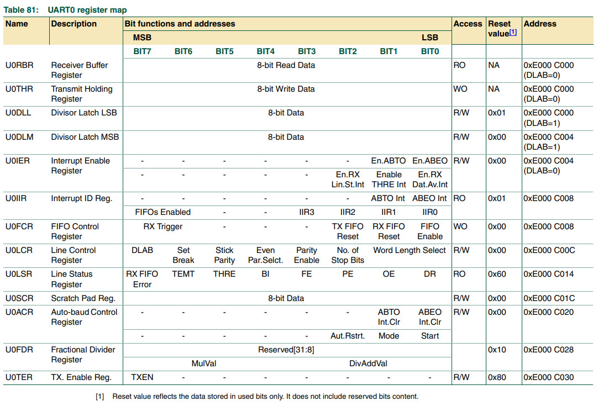

參考資料：
https://www.keil.com/dd/docs/datashts/philips/user_manual_lpc2101_2102_2103.pdf
暫存器

.equ IODIR, 0xe0028008
.equ IOCLR, 0xe002800c
.equ IOSET, 0xe0028004
.equ PINSEL0, 0xe002c000
.equ U0LCR, 0xe000c00c
.equ U0DLL, 0xe000c000
.equ U0DLM, 0xe000c004
.equ U0THR, 0xe000c000
.text
.align 2
.global _start
_start: b reset
_undef: b .
_swi: b .
_pabort: b .
_dabort: b .
_reserved: b .
_irq: b .
_fiq: b .
reset:
ldr r0, =PINSEL0
ldr r1, =0x05
str r1, [r0]
ldr r0, =U0LCR
ldr r1, =0x83
str r1, [r0]
/* 9600bps */
/* 12000000 / 16 / 4 / 9600 = 0x13 */
ldr r0, =U0DLM
ldr r1, =0x00
str r1, [r0]
ldr r0, =U0DLL
ldr r1, =0x13
str r1, [r0]
ldr r0, =U0LCR
ldr r1, =0x03
str r1, [r0]
loop:
ldr r4, =50000
1:
nop
subs r4, r4, #1
bne 1b
ldr r0, =U0THR
ldr r1, =0x55
str r1, [r0]
b loop
.end
完成